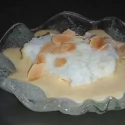

Floating Islands

Description
"Floating islands" are poached meringues on top of soft vanilla custard. A classic French treat!
Ingredients
- 3 eggs, divided
- 1/2 cup white sugar, divided
- 1/4 teaspoon salt
- 1 1/2 cups whole milk
- 1 teaspoon vanilla extract
Steps
- Separate two of the eggs. In the top of a double boiler, combine 1 whole egg and 2 yolks with 1/4 cup sugar and salt, whisking until smooth. Whisk in milk and cook over simmering water, stirring constantly with a spatula or wooden spoon. When the custard thickens enough to coat the back of a spoon, remove it from the heat. (Do not boil. If custard should start to curdle, remove from heat and beat vigorously until smooth.) Pour the custard through a strainer into a bowl and stir in vanilla. Cool and refrigerate.
- In a heat-proof bowl, lightly whisk 2 egg whites with remaining 1/4 cup sugar, just enough to dissolve the sugar. Place the bowl on top of a pot of simmering water and stir constantly until the temperature of the whites reaches 145 degrees F (63 C) or hotter. Immediately remove the bowl from the heat and use an electric mixer to beat warm egg whites until they form stiff, glossy peaks.
- Pour chilled custard into a serving dish. Drop meringue by heaping tablespoonfuls onto the custard to make islands. Chill before serving.
Home